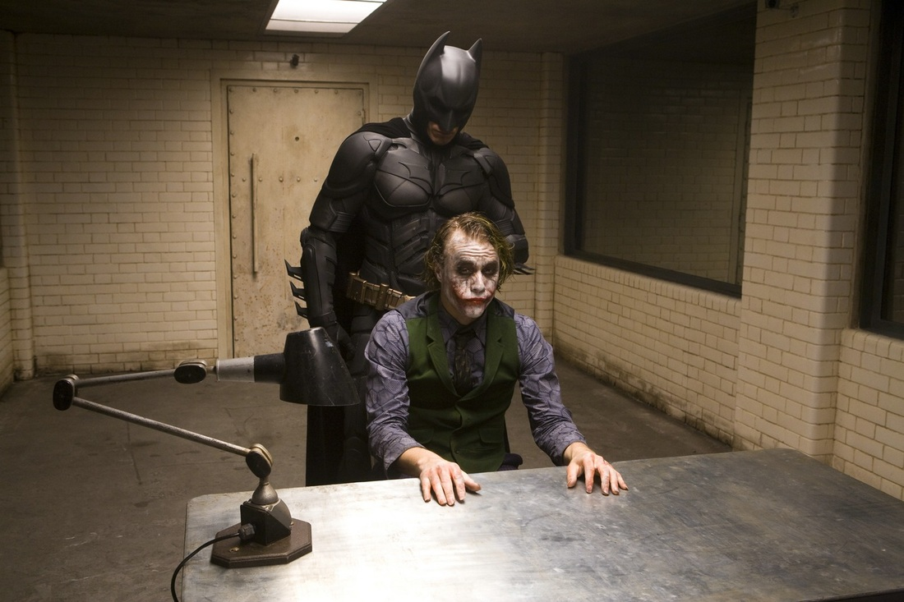

Why I Love The Dark Knight
Year: 2008 | Rating: PG-13
Director: Christopher Nolan
Stars: Christian Bale, Heath Ledger
The Dark Knight is one of my favorite superhero movies of all time. Heath Ledger’s portrayal of the Joker is unforgettable, bringing a new level of depth and complexity to the iconic villain. This movie explores not just action and heroism, but the lines between justice and chaos.
Key Themes
- Morality and Chaos: The Joker represents pure chaos, challenging Batman’s moral code and showing that sometimes the world doesn't fit neatly into good versus evil.
- Duality: The film explores the duality between Batman and the Joker, showing how similar yet different they are, both influenced by the darkness within Gotham.
- Justice vs. Revenge: The movie raises questions about whether justice can truly be achieved through vigilantism.
Memorable Scenes
The interrogation scene between Batman and the Joker is one of the most intense moments in cinema history, where the Joker proves that he can't be broken by Batman's physical force.
Why This Movie Resonates With Me
The Dark Knight resonates with me because of how it challenges traditional notions of heroism and villainy. Heath Ledger’s performance makes the Joker one of the most compelling and terrifying villains in film, and the movie’s exploration of complex themes keeps it relevant and thought-provoking years after its release.